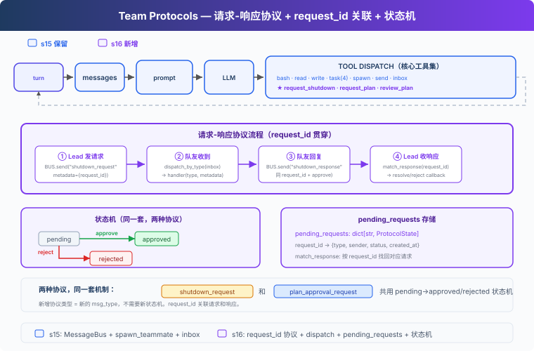

s16: Team Protocols — 队友之间要有约定
"队友之间要有约定" — request-response 模式驱动协商。 Harness 层: 协议 — Agent 之间的结构化握手。
On this page
s01 → ... → s14 → s15 → s16 → s17 → s18 → s19 → s20
"队友之间要有约定" — request-response 模式驱动协商。
Harness 层: 协议 — Agent 之间的结构化握手。
问题
s15 的队友能干活了，但协调是松散的：Lead 发消息，队友回复，没有结构化的协议。两个场景暴露了问题：
关机：Lead 想让 Alice 关机。直接杀线程，Alice 写了一半的文件留在磁盘上。需要握手：Lead 发请求，Alice 确认收尾后关机。
计划审批：Bob 想重构认证模块，属于高风险操作。应该先让 Lead 看 Bob 的计划，审批通过后再动手。
这两个场景结构完全一样：一方发请求，另一方给回复，请求和回复通过同一个 ID 关联。有状态机追踪：pending → approved / rejected。
解决方案

教学代码承接前面章节的 Agent 能力脉络，在 S15 团队通信基础上加入结构化协议。为了聚焦协议机制，省略了完整错误恢复、记忆和技能系统。新增三样：ProtocolState（请求状态追踪）、dispatch_message（按消息类型路由到处理器）、match_response（通过 request_id 关联回复与请求，含类型校验）。
两种协议，一套机制：
| 协议 | 方向 | 用途 |
|---|---|---|
| shutdown_request / response | Lead → 队友 | 体面关机握手 |
| plan_approval_request / response | 队友 → Lead | 计划审批协议示例 |
教学版演示了计划审批的请求-响应消息流程，没有实现执行门控（未 approved 时拦截 bash/write_file）。真实 CC 的队友有 permission gating 机制。
工作原理
ProtocolState: 请求状态
每个协议请求创建一条状态记录，记录谁发的、发给谁、当前状态、附带内容：
@dataclass
class ProtocolState:
request_id: str # 唯一 ID，如 "req_004281"
type: str # "shutdown" | "plan_approval"
sender: str # 发起方
target: str # 接收方
status: str # pending | approved | rejected
payload: str # 计划文本或关机原因
created_at: float # 时间戳
pending_requests: dict[str, ProtocolState] = {}
发请求时创建记录，收回复时通过 request_id 找到对应记录，更新状态。
四步协议流程
以关机为例，完整链路：
① Lead 发请求
req_id = new_request_id() # "req_004281"
pending_requests[req_id] = ProtocolState(type="shutdown", status="pending", ...)
BUS.send("lead", "alice", "shutdown_request", metadata={"request_id": req_id})
② 队友收到 → dispatch
inbox = BUS.read_inbox("alice")
msg_type = msg["type"] # "shutdown_request"
→ 路由到 handle_shutdown_request()
③ 队友回复
BUS.send("alice", "lead", "shutdown_response",
metadata={"request_id": req_id, "approve": True})
④ Lead 收响应 → match
match_response("shutdown_response", req_id, approve=True)
pending_requests[req_id].status = "approved"
request_id 是贯穿全链路的关联键，请求带着它出去，回复带着它回来。
教学版用
shutdown_response统一命名（approve 字段区分同意/拒绝）。真实源码拆成shutdown_approved和shutdown_rejected两种独立消息类型（teammateMailbox.ts:720-763）。
dispatch_message: 按类型路由
队友的 inbox 不只收普通消息，还收协议消息。handle_inbox_message 按消息类型分发：
def handle_inbox_message(name, msg, messages):
msg_type = msg.get("type", "message")
req_id = msg.get("metadata", {}).get("request_id", "")
if msg_type == "shutdown_request":
BUS.send(name, "lead", "Shutting down.", "shutdown_response",
{"request_id": req_id, "approve": True})
return True # 停止循环
if msg_type == "plan_approval_response":
approve = msg["metadata"].get("approve", False)
messages.append({"role": "user",
"content": "[Plan approved]" if approve else "[Plan rejected]"})
return False # 继续循环
新增协议类型只需加新的 if 分支。
match_response: 类型校验
match_response 不只按 request_id 找状态，还会校验响应类型是否匹配请求类型：
def match_response(response_type, request_id, approve):
state = pending_requests.get(request_id)
if not state:
return
if state.type == "shutdown" and response_type != "shutdown_response":
return # type mismatch, skip
if state.type == "plan_approval" and response_type != "plan_approval_response":
return
if state.status != "pending":
return # already resolved, skip duplicate
state.status = "approved" if approve else "rejected"
一个 shutdown_response 不会意外 approve 一个 plan_approval 请求。
统一 inbox 消费：consume_lead_inbox
check_inbox 工具和主循环末尾都调用同一个 consume_lead_inbox() 函数，先路由协议消息再返回剩余内容，避免消息被读走但协议状态没更新：
def consume_lead_inbox(route_protocol=True) -> list[dict]:
msgs = BUS.read_inbox("lead")
if route_protocol:
for msg in msgs:
meta = msg.get("metadata", {})
req_id = meta.get("request_id", "")
msg_type = msg.get("type", "")
if req_id and msg_type.endswith("_response"):
match_response(msg_type, req_id, meta.get("approve", False))
return msgs
主循环末尾还会把 inbox 消息注入到 history，让 LLM 能看到并做出反应。
队友 idle loop：等待而不是退出
s15 的队友跑完 10 轮就退出。s16 的队友在 LLM 返回非 tool_use 后进入 idle 等待：轮询 inbox，收到 shutdown_request 就响应退出，收到新消息就继续工作。
LLM 返回非 tool_use
→ idle: 每秒轮询 inbox
→ 收到 shutdown_request → 回复 shutdown_response → 退出
→ 收到新消息 → 注入 messages → 继续 LLM turn
教学版省略了 idle_notification 给 Lead 的通知。真实 CC 在 idle 时发 idle_notification，Lead 收到后知道队友空闲，可以分配新任务。
合起来跑
1. Lead: "让 Alice 创建一个文件，然后关机"
2. Lead → spawn_teammate("alice", "backend", "创建 config.py")
3. alice 线程启动 → write_file("config.py", "...") → 完成 → idle
4. Lead → request_shutdown("alice")
→ BUS.send("shutdown_request", {request_id: "req_000142"})
5. alice idle 轮询收到 → handle_shutdown_request
→ BUS.send("shutdown_response", {request_id: "req_000142", approve: True})
6. Lead consume_lead_inbox → match_response("req_000142", approve=True)
→ pending_requests["req_000142"].status = "approved"
→ inbox 消息注入 history，LLM 看到关机结果
关机握手完整：请求 → 确认 → 关机。每一步有 request_id 追溯。
相对 s15 的变更
| 组件 | 之前 (s15) | 之后 (s16) |
|---|---|---|
| 协调方式 | 松散文本消息 | 结构化请求-响应协议 |
| 请求追踪 | 无 | ProtocolState + pending_requests dict |
| 消息路由 | 全部当文本处理 | dispatch_message 按类型分发 |
| 关机 | 自然退出或杀线程 | request_id 握手机制 |
| 计划审批 | 无 | 消息流程示例（未实现执行门控） |
| 新消息类型 | message, result | + shutdown_request/response, plan_approval_request/response |
| 队友生命周期 | 最多 10 轮 | idle loop（等待 inbox 消息） |
| Lead inbox | check_inbox 和主循环分别读 | 统一 consume_lead_inbox |
| Lead 工具 | 14 (s15) | 14（核心工具集加入 request_shutdown, request_plan, review_plan） |
| 队友工具 | 4 (s15) | + submit_plan (5) |
试一下
cd learn-claude-code
python s16_team_protocols/code.py
试试这些 prompt：
Spawn alice as a backend dev. Ask her to create a file. Then request her shutdown.Spawn bob with a refactoring task. Have him submit a plan first. Then review and approve it.
观察重点：关机握手是否完整（请求 → 确认 → 关机）？pending_requests 的状态是否正确转换？request_id 是否在请求和响应之间保持一致？队友 idle 后是否能收到 shutdown_request？
接下来
s15-s16 中，Lead 必须给每个队友分配任务。"Alice 做这个，Bob 做那个"。任务看板上有 10 个未认领的任务，Lead 得手动 assign。
能不能让队友自己看板、自己认领？Lead 只需要创建任务，队友自己发现、自己认领、自己完成。
s17 Autonomous Agents → 队友自组织，不需要领导分配。